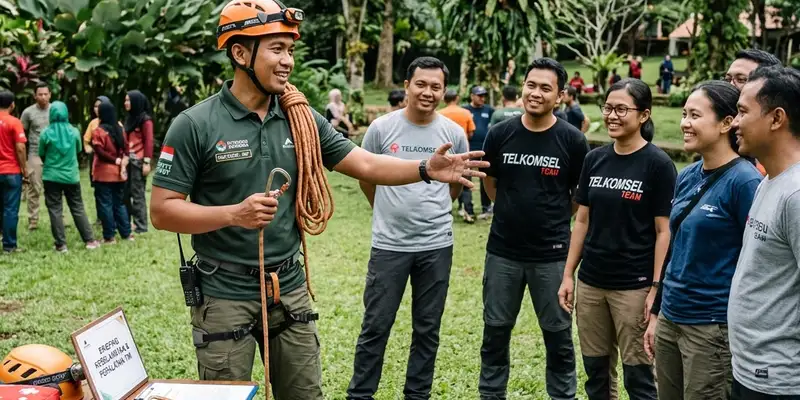

Vendor outbound corporate gathering yang tepat adalah penyedia layanan yang berpengalaman menangani acara korporat, menawarkan paket sesuai anggaran, serta memiliki fasilitator dan perlengkapan keselamatan yang memadai untuk mendukung kelancaran acara.
Ringkasan Inti
- Vendor outbound yang baik memiliki pengalaman menangani acara corporate gathering.
- Kesesuaian paket dengan anggaran perusahaan menjadi pertimbangan utama dalam memilih vendor.
- Pemandu lapangan dan perlengkapan keselamatan menjadi indikator kredibilitas vendor.
- Komunikasi yang transparan sebelum acara membantu memastikan kelancaran pelaksanaan.
- Reputasi dan ulasan dari klien sebelumnya dapat menjadi bahan pertimbangan tambahan.
Apa yang Perlu Diperhatikan Saat Memilih Vendor Outbound untuk Corporate Gathering?
Hal yang perlu diperhatikan saat memilih vendor outbound untuk corporate gathering meliputi pengalaman vendor dalam menangani acara korporat, kelengkapan perlengkapan keselamatan, serta kemampuan menyesuaikan paket acara dengan anggaran yang telah disetujui perusahaan. Vendor yang kredibel umumnya bersedia mendiskusikan detail paket secara terbuka sebelum kesepakatan dibuat.
Selain aspek pengalaman dan keselamatan, perusahaan juga perlu memperhatikan kesesuaian lokasi, fasilitas pendukung seperti area istirahat dan konsumsi, serta kemampuan vendor dalam mengintegrasikan tema acara dengan tujuan corporate gathering yang telah direncanakan sebelumnya.
Apa Saja Pertanyaan Penting Sebelum Memesan Vendor Outbound?
Pertanyaan penting sebelum memesan vendor outbound meliputi rincian paket yang ditawarkan, jumlah minimal dan maksimal peserta, opsi penyesuaian anggaran, serta kebijakan terkait pembatalan atau perubahan jadwal acara. Menanyakan hal ini di awal membantu perusahaan menghindari kesalahpahaman terkait cakupan layanan yang akan diterima.
Selain itu, perusahaan sebaiknya menanyakan mengenai kualifikasi pemandu lapangan, prosedur keselamatan yang diterapkan, serta apakah vendor menyediakan dokumentasi acara sebagai bagian dari paket yang dapat digunakan untuk kebutuhan komunikasi internal perusahaan.

Standar keselamatan dan kualifikasi instruktur di lapangan adalah faktor penting dalam menentukan vendor outbound.
Bagaimana Menilai Kesesuaian Vendor dengan Anggaran Perusahaan?
Menilai kesesuaian vendor dengan anggaran perusahaan dapat dilakukan dengan membandingkan beberapa penawaran vendor, memeriksa rincian layanan yang termasuk dalam setiap paket, serta mempertimbangkan fleksibilitas vendor dalam menyesuaikan program sesuai batasan anggaran yang tersedia. Vendor yang transparan mengenai rincian biaya umumnya lebih mudah diajak berdiskusi terkait penyesuaian paket.
Perusahaan juga dapat menilai kesesuaian anggaran dengan meminta vendor menjelaskan opsi paket dengan tingkat harga berbeda, sehingga perusahaan dapat memilih opsi yang paling sesuai dengan anggaran yang telah disetujui tanpa mengorbankan kualitas pelaksanaan acara secara signifikan.
Mengapa Gemilang Katun Outbound Bisa Menjadi Pertimbangan untuk Corporate Gathering?
Gemilang Katun Outbound merupakan salah satu penyedia layanan outbound yang menawarkan paket kegiatan untuk kebutuhan korporat, termasuk corporate gathering, dengan pendampingan pemandu lapangan selama acara berlangsung. Vendor ini dapat menjadi salah satu pertimbangan bagi perusahaan yang sedang menyusun anggaran dan mencari mitra penyelenggara acara.
Sebelum memutuskan menggunakan layanan ini, perusahaan disarankan menghubungi langsung untuk mendiskusikan detail paket, ketersediaan jadwal, lokasi kegiatan, serta kesesuaian program dengan anggaran dan tujuan corporate gathering yang telah direncanakan.
Apa Kesalahan Umum Saat Memilih Vendor Outbound untuk Acara Korporat?
Kesalahan umum saat memilih vendor outbound untuk acara korporat antara lain hanya mempertimbangkan harga termurah tanpa memeriksa kelengkapan layanan, serta tidak mengonfirmasi detail program sebelum anggaran diajukan kepada atasan. Kesalahan ini dapat berdampak pada kualitas acara maupun kesesuaian dengan anggaran yang telah disetujui sebelumnya.
Kesalahan lain yang sering terjadi adalah tidak melibatkan vendor sejak tahap awal penyusunan anggaran, sehingga estimasi biaya yang diajukan kepada atasan menjadi kurang akurat dibanding penawaran resmi yang diberikan vendor setelah proposal disetujui.
Kesimpulan Praktis
Memilih vendor outbound untuk corporate gathering membutuhkan ketelitian dalam menilai pengalaman, kelengkapan layanan, dan kesesuaian paket dengan anggaran yang telah disetujui perusahaan. Komunikasi yang transparan sejak tahap perencanaan anggaran dapat membantu memastikan acara berjalan lancar sesuai harapan.
FAQ Seputar Vendor Outbound Corporate Gathering
Melibatkan vendor sejak tahap penyusunan anggaran dapat membantu perusahaan mendapatkan estimasi biaya yang lebih akurat sebelum proposal diajukan kepada atasan.
Sebagian besar vendor outbound umumnya dapat menyesuaikan paket dengan anggaran perusahaan, meski cakupan layanan dapat berbeda tergantung besaran anggaran yang tersedia.
Pemesanan lebih awal umumnya disarankan agar vendor dapat mempersiapkan jadwal, lokasi, dan program sesuai kebutuhan corporate gathering secara lebih matang.